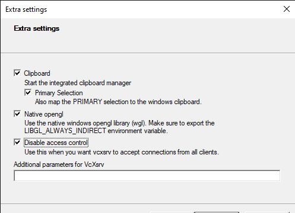

Useful Kubernetes Additions
For the quickest path through the tutorial use an x86 linux machine and follow the instructions here Setup a Kubernetes Server. For additional options and non-essential features use this page.
Install the Kubernetes Dashboard
The dashboard gives you a nice GUI for exploring and controlling your cluster. It is very useful for new users to get an understanding of what Kubernetes has to offer.
Execute this on your workstation:
GITHUB_URL=https://github.com/kubernetes/dashboard/releases
VERSION_KUBE_DASHBOARD=$(curl -w '%{url_effective}' -I -L -s -S ${GITHUB_URL}/latest -o /dev/null | sed -e 's|.*/||')
kubectl create -f https://raw.githubusercontent.com/kubernetes/dashboard/${VERSION_KUBE_DASHBOARD}/aio/deploy/recommended.yaml
Then create the admin user and role by executing the following:
kubectl apply -f - <<EOF
apiVersion: v1
kind: ServiceAccount
metadata:
name: admin-user
namespace: kubernetes-dashboard
---
apiVersion: rbac.authorization.k8s.io/v1
kind: ClusterRoleBinding
metadata:
name: admin-user
roleRef:
apiGroup: rbac.authorization.k8s.io
kind: ClusterRole
name: cluster-admin
subjects:
- kind: ServiceAccount
name: admin-user
namespace: kubernetes-dashboard
EOF
get a token for the user and copy the token into your clipboard:
kubectl -n kubernetes-dashboard describe secret admin-user-token | grep '^token'
Use kubectl to start a proxy that will forward HTTP requests to your cluster:
kubectl proxy &
Finally, browse to Dashboard Screen URL and paste the Token that you copied above:
Installing on a Raspberry Pi
Raspberry Pi3 and Pi4 can run the k3s server. The more memory installed the better.
We have not worked out how to run the client tools kubectl and helm on the Pi as yet. You can run these on a separate linux or Windows workstation. There are arm64 versions of helm and kubectl so we expect that the 64bit Raspberry Pi OS would be able to run these, but this is untested.
For a Raspberry Pi you need a couple of extra settings to get K3S running:
sudo update-alternatives --set iptables /usr/sbin/iptables-legacy
# edit /boot/cmdline and make sure the single line contains:
# cgroup_memory=1 cgroup_enable=memory
sudo reboot
Installing on Windows Subsystem for Linux
WSL2 gives you a linux distribution running within Windows, the following additional instructions explain how to use this platform.
Install k3s server
First you need Windows 10 OS build 20262 or higher. Then follow the WSL2 instructions. When installing the linux distribution, choose Ubuntu.
Start a new WSL2 Window and bring up the k3s server as follows:
wget https://github.com/k3s-io/k3s/releases/download/v1.21.2%2Bk3s1/k3s
sudo install -o root -g root -m 0755 k3s /usr/local/bin/k3s
sudo k3s server
There are no services in WSL so this k3s server will run in the foreground. You need to start a second WLS window to continue as follows:
mkdir .kube
sudo cp /etc/rancher/k3s/k3s.yaml .kube/config
sudo chown giles .kube/config
At this point you can return to the main instructions at Install kubectl.
Get X11 GUI to Work with WSL
When you come to launch the GUI later on you will need some additional steps as follows.
First you will need install docker for WSL.
You will also require an X11 Server for Windows. When you run the server choose the option Disable Access Control as follows:
The networking for docker on WSL will not broadcast between containers so you need to use EPICS_CA_ADDR_LIST to get edm to see the example IOC PVs. To do this perform the following steps to get the name of the example IOC pod and discover its IP address, then pass that to the edm container:
cd to the root of the project you created in Deploy The Example IOC, then:
kubectl get pods
NAME READY STATUS RESTARTS AGE
example-6779d4dcf-g2cpm 1/1 Running 2 19h
kubectl exec -it example-6779d4dcf-g2cpm -- busybox ifconfig eth0
eth0 Link encap:Ethernet HWaddr 70:85:C2:DB:70:96
inet addr:192.168.86.33 Bcast:192.168.86.255 Mask:255.255.255.0
export DISPLAY=$(awk '/nameserver / {print $2; exit}' /etc/resolv.conf 2>/dev/null):0
export LIBGL_ALWAYS_INDIRECT=1
# IP ADDRESS from above kubectl command
./opi/stexample-gui.sh -e EPICS_CA_ADDR_LIST=192.168.86.33